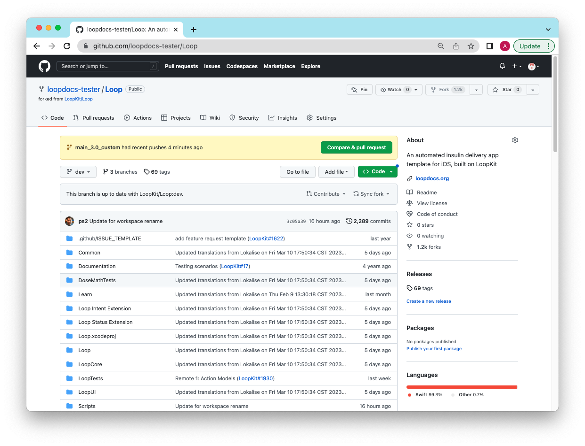

Customize with GitHub
Hot Topics¶
Pro Tip
The method on this page allows you to create a set of personalized customizations that you can use in addition to the Loop and Learn: Prepared Customizations. You can use (and re-use) your customizations with either GitHub Browser Build or Mac-Xcode builds so you don't have to repeat the customization with every update.
- If you are building with Mac-Xcode method, you can use the same lines prepared for GitHub Browser method and simply paste them in your terminal at the LoopWorkspace folder to customize your code
Modules vs Submodule
This page has instructions to set up your own fork for the Modules associated with LoopWorkspace that are needed for a selected customization.
The technical term for the Modules is submodule when you are using git commands. Each Module has its own repository and you will be working with your fork of that repository at https://github.com/username/Module.
- You can often use the same customization for several releases
- If a customization that you prepared for an older release says "does not apply" when you use it, you'll need to prepare a new one
Do Not Make a Pull Request¶
Ignore GitHub Pull Request Prompts
Please do not click on boxes that GitHub might show you that ask if you want to Compare & Pull Request.
This would be an attempt to merge changes from your fork back to LoopKit. These changes are for your fork only. Ignore those prompts.
Overview¶
Time Estimate
- About half an hour to an hour per Module
- Typically 1 or 2 Modules
- Ten minutes to add patch lines to your build_loop.yml file
- One minute to start the build
- An hour before the TestFlight build shows up on your phone
Summary
- Prepare Customization (One Time):
- Once you have prepared a given customization, you can use it again with each update
- If there is an update (new release) and the customization is no longer valid - you will get a clear error message
- Just follow the steps on this page again to replace the customization that did not work
- If there is an update (new release) and the customization applies with no errors, then you do NOT need to create an update
- LoopDocs: Decide on Modules to modify using the LoopDocs: Code Customization page
- You only need to create your own customization if what you want is not provided at Loop and Learn: Single Customization List
- GitHub (each Module):
- Fork Module (if needed)
- Sync the Module (if needed)
- Make the desired modification(s) using the GitHub pencil tool
- Save (commit) your changes to your fork
- Prepare lines needed for each customization and save
- GitHub (LoopWorkspace)
- You will use the GitHub pencil tool to edit build_loop.yml in your fork
- Add customization lines to the file
- Save (commit) your changes
- Action: Build Loop
- Phone: Install Loop with TestFlight
FAQs
- Do I need a Mac computer? No. This can be done on any browser, although it will be easier using a computer.
- Should I build without customizations first? Yes. Make sure the build process works without customizations. You don't need to install the build on your phone, just make sure it builds without errors before you start modifying.
How to Customize a GitHub Build¶
You do not need a Mac, you can still do this using any browser on a computer.
There is some background information at the bottom of this page starting at LoopWorkspace if you want to know what you are doing. Otherwise, just follow the steps like a cookbook.
Decide Which Modules You Want to Modify¶
Decide which LoopDocs: Code Customization changes you want to make. Each customization lists a Module name. You will want a fork for each Module you wish to modify.
- DASH Pods: Use OmniBLE
- Eros Pods: Use OmniKit
- Other Modules are Loop and LoopKit
- Do not get confused later: LoopKit is both a username and a Module name
- Refer to the Fork Table when directed
Outline of What Happens in the Module¶
Review Only
Review this section so you know what to expect. The actual steps will come later, starting with Create a Fork for Selected Module or Edit Module in GitHub.
In the next sections, the exact process for making changes will be documented. But the steps may feel confusing. This section tries to explain what you will be doing once you start editing with a given Module.
- Make a fork if you don't have one
- Change the line(s) of code desired for your customization(s)
- Save (commit) the change(s) using descriptive comments into a separate branch (each will be called username-patch-# and the number will increment)
- Repeat until done with this Module
Later, you will use information from your fork and the patch-# branches to create your customizations. (Suggestion - use same file as your Secrets, or at least keep the customization file in the same folder). Details are found at the Prepare the Customizations section.
Create a Fork for Selected Module¶
Choose your link:
- New Fork: if you do not have a fork of this Module
- Code Updates: if you are returning after a new release
- Existing Fork for Module: if you have a fork but need guidance on whether it is the right fork
Code Updates¶
New Release
If you have previously used this process for a prior release, use the same Modules you already forked.
You can often reuse customizations that you created earlier even with a new release. Attempt to use your existing patches before creating new ones.
If a customization did not work, then
- Go to the branch for each Module (dev or main) that is the default branch in the Branch Table
- Sync that branch
Skip ahead to Edit Module in GitHub.
New Fork¶
If you want a modification that uses a particular Module, you must fork that module to your GitHub account. You will repeat the Fork and Modify steps for each module.
- Log into your GitHub account
- Right click (or control click) on the URL in the Fork Table
- This opens a new browser tab at the URL of the repository you need to fork
- Tap on Fork, your fork will show up in the tab
Fork Table¶
This table lists all the modules referred to on the Code Customization page linked above:
| Module | Fork From |
|---|---|
| Loop | https://github.com/LoopKit/Loop |
| LoopKit | https://github.com/LoopKit/LoopKit |
| OmniBLE (for DASH) | https://github.com/LoopKit/OmniBLE |
| OmniKit (for Eros) | https://github.com/LoopKit/OmniKit |
Remember - you can only have a single fork of a given repository. If you already have a fork, you don't need another one; but it must be a fork from the URL listed the Fork Table.
I already have a fork
Go to Existing Fork for Module and follow the directions there.
Branch Table¶
When you fork a repository, the default branch is the one that is forked. That is ok. Only include that default branch when forking.
| username/Repository | Default Branch |
|---|---|
| LoopKit/Loop | dev |
| LoopKit/LoopKit | dev |
| LoopKit/OmniBLE | dev |
| LoopKit/OmniKit | main |
Loop with LnL Patches
Some Loop users build with the loopnlearn version of LoopWorkspace using the main_lnl_patches branch. Initially, this process involved making your LoopWorkspace fork from loopnlearn instead of LoopKit. You have the option of deleting that fork and starting over with LoopKit, adding your 6 Secrets to your new fork of LoopWorkspace and apply those same patches in the build-loop.yml file of your new fork, see Loop and Learn: GitHub Browser Build for Loop with Patches.
The process for creating your own customizations is the same as those using the released code.
Edit Module in GitHub¶
Open your browser to your https://github.com/username/Module fork. Be sure to sync your fork if it shows it is behind the LoopKit repository.
Navigate to the file you need to modify (using the instructions to find the lines from the LoopDocs: Customization Page)
Pro Tip
Look at the files you want to change - if more than one change is desired for a single file - do them at the same time.
This section provides the steps to make a single customization for the Module. If you need more than one, just repeat the process and make additional "patch" branches.
You will be using the "pencil" tool that comes with GitHub in your fork while logged into your username.
Are there detailed instructions?
For more information about editing with GitHub:
- Once you make the change to a given file, tap on Commit changes (upper right)
- Tap in the Commit message box and replace the default "Update filename" with a comment about what the customization does
- Click on the "Create a new branch for this commit" option
- Note: when you do the LoopWorkspace modifications, you will not choose this option
- Click on the Propose changes button
- As soon as you do this, a new branch is automatically created with a name like username-patch-#, where the number increments each time
- The next screen allows you to create a pull request - you do NOT want to do this
- At this point, click on the Code tab (upper left)
Once you've tapped on Code, you see there is still an opportunity to "Compare & pull request" - ignore that.
Do Not Make a Pull Request¶
Ignore GitHub Pull Request Prompts
Please do not click on boxes that GitHub might show you that ask if you want to Compare & Pull Request.
This would be an attempt to merge changes from your fork back to LoopKit. These changes are for your fork only. Ignore those prompts.

Just below that message, there is an icon showing branches. Click on that instead.
The screen shows all the branches available - find the one(s) you just created.
- Tap on username-patch-1
- Tap on the Clock icon to the right
- The top line is the last commit (your customization)
- You need to record the very long alphanumeric number associated with this commit
- There is a copy icon to the right of the commit - click on it and save it in your text file along with a comment about the customization and record which module you used for the customization
For example:
# Loop: Filename: Modify this value to that value
SHA-1 = 5e9f4f407ff5544663f496d2e3a5ed8aa4f32a68
Later on, you will create the actual command needed to insert into build_loop.yml so you can add this customization when running the GitHub Build step.
Repeat this process until you've done all your customizations for this Module and then move on to the next Module.
Prepare the Customizations¶
Once you prepare the commands, then you will edit the build_loop.yml file of your LoopWorkspace fork.
For each commit that has a customization you want to include, create a pair of patch lines consisting of the comment (must start with a #) followed by the curl statement pointing to the commit that has the customization.
Save the customization lines in your text file for later use in the build_loop.yml file.
# Module: File: code customization description
curl https://github.com/username/Module/commit/SHA-1.patch | git apply -v --directory=Module
where:
curlmeans copy from URL- username is your GitHub username
- Module is where you made the customization (Module is in multiple places)
- SHA-1 is the full identifier for the commit that has the change; there is a copy button to make this easy
- the
.patchafter the SHA-1 is GitHub magic that formats that code change into a patch
To view the exact code change associated with that patch, open a browser at the URL of https://github.com/username/Module/commit/SHA-1.
Update LoopWorkspace¶
The final step is to update your LoopWorkspace fork to apply these customizations by adding those customization lines into the build_loop.yml file.
Return to your GitHub fork for LoopWorkspace and make sure to sync it if needed.
- Find the folder .github/workflows and click on it
- Find the file build_loop.yml and click on it
- Tap on the pencil (so you can edit this file)
- Locate line 31, which is just above the words:
# Patch Fastlane Match to not print tables
- Paste the contents of the block below so it comes before that section
# Customize Loop: Download and apply patches
- name: Customize Loop
run: |
# For each patch, edit comment line (keep the #) then update curl (and remove the #)
# Submodule Loop patches:
# Loop: Filename: customization details
#curl https://github.com/username/Loop/commit/SHA-1.patch | git apply -v --directory=Loop
# Submodule LoopKit patches:
# LoopKit: Filename: customization details
#curl https://github.com/username/LoopKit/commit/SHA-1.patch | git apply -v --directory=LoopKit
# Submodule xxxxx patches: Follow prototype above
Open the text file in which you saved the customization lines.
For a given submodule, paste the comment / curl command as indicated in the template above.
The indenting needs to match, so tab or (shift-tab) to line up the patches.
Once you are done with all the edits for build_loop.yml you will commit the changes to your fork directly.
- Once you have finished the edits for build_loop.yml
- Tap on Commit changes (upper right)
- Tap in the larger box below the "Update build_loop.yml" and indicate a summary of the customizations you added
- Click on the option to "Commit directly to your branch" if it is not already selected
- NOTE: for LoopWorkspace - commit directly to your default branch
- Click on Commit changes
- You can make as many changes to build_loop.yml in your fork as you want
When you are ready, it's time to build Loop with your customizations.
Build Loop¶
- Click on Action: Build Loop
- Click on Run workflow on the right side
- Then click on the green Run Workflow button
Wait about 2 minutes before walking away to make sure there are no errors. If you get an error, then look for the first "did not apply" error message and fix the customization right before that line.
In about 1 hour, your customized Loop will be available for installation on your phone via TestFlight.
Special Cases¶
Existing Fork for Module¶
What if you already have a fork of one of the modules?
Your existing fork is from a username other than LoopKit
- If you know this is a fork you do not care about, you can delete the repository.
- If you care about this fork, you are probably experienced enough to know how to solve the issue.
Instructions to delete a repository are found at GitHub Docs
Once deleted, go to Create a Fork for Selected Module.
Background Information¶
LoopWorkspace¶
The LoopWorkspace repository is the umbrella organization holding all the pieces needed to build the Loop app. Part of what LoopWorkspace provides is a list of pointers to a specific commit for each of the Modules used in the workspace.
- A commit is a specific version of code in a repository
- A workspace is a grouping of several repositories (Modules) into a complete package
- The workspace includes a list of the specific commit for each repository
You will be adding one or more code changes to the released (or dev) branch of LoopWorkspace using patch commands in the build_loop.yml file. Each patch repeats the small code change associated with each commit your make to your fork of a given Module.